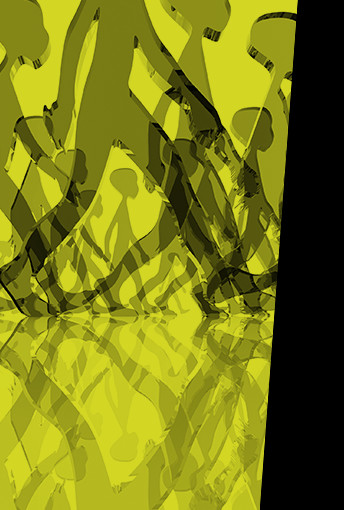

3-4-5 juni 2015 Marbello(Malaga) www.hrmagazine.be/events
DUURZAAM WERKEN, zijn we op de goede weg?

Duurzaam opent de deur naar een grootse toekomst in een bijzonder complexe wereld. Het maakt de organisatie wendbaarder en de werknemer meer geëngageerd.
Duurzaam leidt naar innovatie en rendabiliteit. Hebben we de weg gevonden?